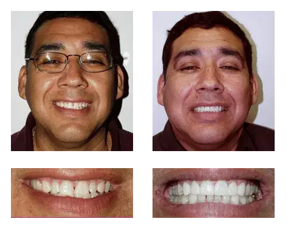
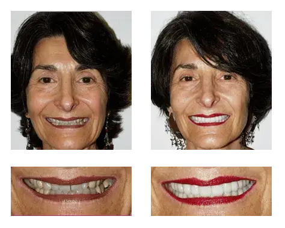
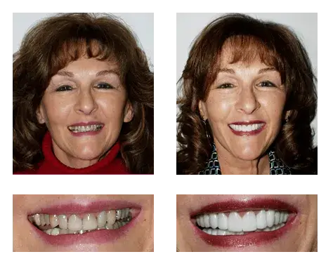

Left imageRight image

GALLERY CASE 15
Spacing & tooth shape
Spaces between some upper front teeth are less visible in the right-hand photo. The front teeth also appear more uniform in shape.
Lehigh Valley Smile Designs
Appearance matters.
So does your bite.
We offer smile makeovers in Bethlehem, PA. Dr. Patrick Petrillo’s focus includes complete-mouth reconstruction, with care planned around your goals, oral health and bite.
Plan your smile makeover visit
Start with what matters to you
You don’t need to choose a procedure before you visit. Start with what you’d like to change.
A smile makeover may combine cosmetic treatments, such as whitening or veneers, with restorative care for worn or damaged teeth. Your dentist considers how your teeth look and work together.
The right amount of treatment
Whitening or bonding may be enough for a lighter shade or a small repair. If you have several concerns, your dentist can explain which treatments to combine and what should come first.
Decay or gum disease may need treatment before veneers. Mention pain, bleeding gums or sensitivity at your consultation so your dentist can assess these before cosmetic care.
Tell your dentist if you clench or grind, or have worn teeth, crowns or fillings. This helps them assess which options suit your mouth and what to treat first.
Before & after gallery
See differences in spacing, tooth shape and shade. Each person’s treatment and results are different.

GALLERY CASE 15
Spaces between some upper front teeth are less visible in the right-hand photo. The front teeth also appear more uniform in shape.

GALLERY CASE 4
The right-hand photo shows a brighter-looking smile with more uniform tooth outlines and front-tooth edges.

GALLERY CASE 10
The upper front teeth look more uniform in shade and outline in the right-hand close-up than in the left-hand photo.
Your first visit
Bring your priorities, your questions and any date you have in mind.
At your first visit, we discuss what you want to change, examine your teeth and gums, and review your bite and existing dental work.
Tell us what you like about your smile and what you’d change. Let us know whether you want to change how your teeth look, how they work, or both.
Your dentist checks tooth proportions, facial features and previous restorations alongside your oral health and bite, then explains suitable options and the order of treatment.
Timing depends on the treatments involved. Some care can be done in stages; orthodontic or more involved restorative treatment may take longer. Ask for the expected schedule and estimate for your plan.
Meet the dentists
Dr. Patrick Petrillo treats patients with a focus that includes smile makeovers and complete-mouth reconstruction. He graduated from Temple University and has pursued continuing education through Dawson, Schuster and Spear.
The practice’s founder and CEO, Dr. Michael Petrillo graduated from the University of Pennsylvania School of Dental Medicine. His postgraduate cosmetic and aesthetic-reconstruction training includes the Pacific Aesthetic Continuum, Dawson Seminars and the Las Vegas Institute.
Your cost depends on the treatments you choose and the care your teeth need.
The number of teeth, procedures and any care needed before cosmetic treatment can affect your estimate. If treatment is done in stages, ask what is due at each stage.
Before deciding on care, request an estimate that separates:
We work with plans from Delta, United Concordia and Aetna. We verify benefits and bill insurance as a courtesy.
Coverage depends on each procedure and your plan, rather than the name “smile makeover.” Network status varies by plan. Elective cosmetic care is not automatically covered. The team can verify benefits and discuss your expected out-of-pocket costs.
Financing is available through CareCredit. Eligibility, approval and terms apply.
Kleer membership is available; it is not insurance. Ask which benefits, if any, apply to cosmetic treatment.
We accept Visa, Mastercard, American Express and Discover.
Insurance, financing and membership detailsCare after treatment
Each treatment has its own care needs. Ask about upkeep and possible future repairs before you decide.
Brush twice daily with fluoride toothpaste and clean between your teeth daily. Follow the review and cleaning schedule your dentist recommends.
Avoid chewing hard objects or biting your nails. Tell your dentist if you clench or grind so protection can be considered as part of your care.
Veneers and other restorations may need repair or replacement over time. Whitening results can also change, so ask what maintenance your treatments will need.
Before you decide
There is no single ideal age. Your dentist examines your oral health and considers your dental needs and goals to recommend suitable options.
Mention your event date when you book and start planning early. Your dentist needs to assess your teeth and proposed treatments before giving an expected completion date.
Some plans can be completed in phases. The sequence depends on your oral health and the treatments involved. Discuss your priorities and timing so the dentist can explain an appropriate approach.
Smoking can stain teeth and restorations and affect their appearance. Avoiding tobacco and following your dentist’s care recommendations helps you maintain your smile.
You do not need to commit to a full makeover. Tell the team which tooth or restoration is damaged and whether you have pain or sensitivity. An assessment comes before deciding whether repair, replacement or a broader plan is appropriate.
Before booking, ask the team to confirm the examination fee, any records or imaging needed, and what the visit includes. Recommended treatment is estimated separately.
Some options do. Veneers can involve removing enamel, so that treatment is not reversible. Discuss tooth preparation, alternatives and future maintenance with your dentist before deciding on care.
Whitening lightens natural teeth, but does not lighten crowns, veneers or fillings. That can create a shade difference. Tell your dentist about existing dental work before choosing the shade and order of treatment.
Weekday hours and appointments on the first and third Saturdays.
Start with a conversation
Request a smile makeover consultation at our Bethlehem office.